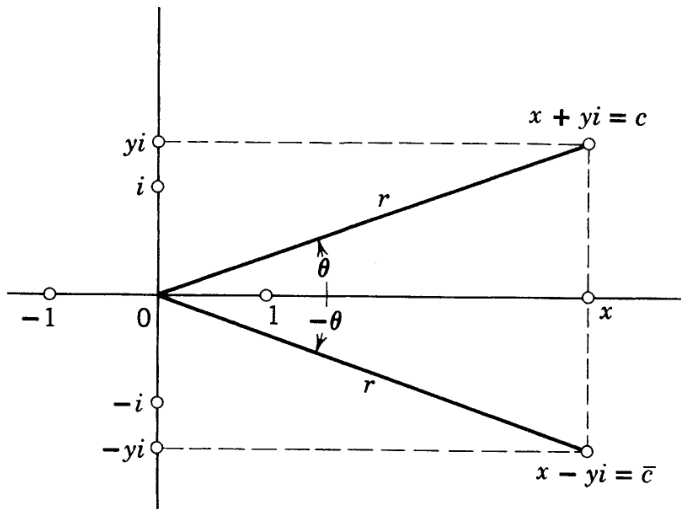
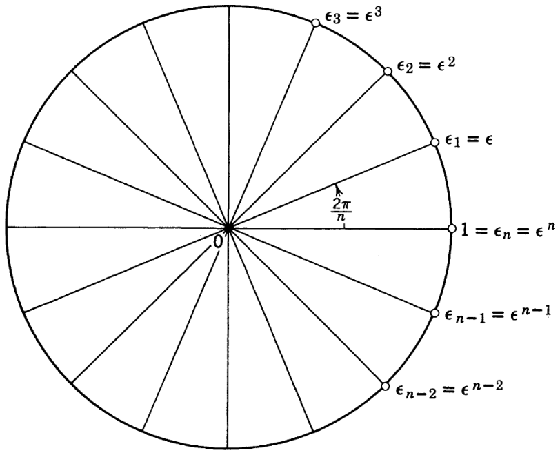

本书的研究主要以实数连续统为基础。不过，为了给第七、八、九章的讨论做准备，我们提醒读者，代数中的问题曾引导人们进一步扩充数的概念，得到复数。从自然数走到实数，是为了消除一些例外情况，使减法、除法、点与数的对应等运算或关系能够普遍实行。同样，要求每个二次方程、乃至每个代数方程都有解，就迫使我们引入复数。例如，若要求方程
有根，就必须引入新的符号 i 和 −i 作为它的根。（复变函数论表明，这样做已经足以保证每个代数方程都有解。¹）
原注 1（第 103 页） 代数方程形如 P(x)=0，其中 P 是复系数多项式。
若 a,b 是普通实数，复数 c=a+ib 表示数对 (a,b)。这种数对按以下通则运算：复数相加、相乘、相除时，把 i 暂当作一个不定量，然后用关系 i2=−1 化简，把一切高于一次的 i 的幂消去，最后只留下 a+ib 形式的表达式。实数也包括在复数之内，正是 b=0 的特殊情形。
我们假定读者对复数已有一定了解。不过，结合复数的几何表示或三角表示，有一个特别重要的关系值得强调。

图 1.S.4 复数 x + yi 及其共轭复数的几何表示。
在直角坐标系中，用坐标为 x,y 的点 P 表示复数 c=x+iy。利用 x=rcosθ，y=rsinθ，以极坐标 r,θ 代替直角坐标 x,y（参见第 101 页）。于是 r=x2+y2 是点 P 到原点的距离，θ 是 x 轴正向与线段 OP 所成的角。复数 c 就表示成
c=r(cosθ+isinθ).角 θ 称为 c 的辐角，r 称为它的绝对值或模，也写作 ∣c∣。“共轭”复数 cˉ=x−iy 显然有相同的绝对值，其辐角则为 −θ（图 1.S.4）。显然，
r2=∣c∣2=ccˉ=x2+y2.采用三角表示，复数乘法特别简单。事实上，
c⋅c′=r(cosθ+isinθ)⋅r′(cosθ′+isinθ′)=rr′[(cosθcosθ′−sinθsinθ′)+i(cosθsinθ′+sinθcosθ′)].用三角函数的加法定理，就得到
c⋅c′=rr′(cos(θ+θ′)+isin(θ+θ′)).
图 1.S.5 n 次单位根（图中 n = 16）。
可见两个复数相乘，只须将它们的模相乘、辐角相加。这个重要的公式
(cosθ+isinθ)(cosθ′+isinθ′)=cos(θ+θ′)+isin(θ+θ′)通常称为棣莫弗定理。由此可得
(cosθ+isinθ)n=cosnθ+isinnθ.例如，n 为正整数时，马上就可以据此解出方程 xn=1。它的根（即所谓单位根）是
ε1εn−1=ε=cosn2π+isinn2π,ε2=ε2=cosn4π+isinn4π,…,=εn−1=cosn2(n−1)π+isinn2(n−1)π,εn=εn=1（图 1.S.5）。从几何上看，各单位根对应的点，正是以原点为圆心、半径为 1 的圆内接正 n 边形的各个顶点。
译者注 非零复数的辐角允许相差 2π 的整数倍。因此，要使 n 次幂等于 1，辐角的 n 倍只须等于某个 2πk。取连续的 n 个整数 k 恰好得到圆上 n 个不同的点，再向后取就会重复。
最后，在等式 (cosθ+isinθ)n=cosnθ+isinnθ 的左端应用二项式定理展开，分别比较实部和虚部，就得到用 sinθ 和 cosθ 的幂及其乘积表示 cosnθ 和 sinnθ 的公式：
cosnθsinnθ=cosnθ−(2n)cosn−2θsin2θ+(4n)cosn−4θsin4θ−⋯,=(1n)cosn−1θsinθ−(3n)cosn−3θsin3θ+(5n)cosn−5θsin5θ−⋯.